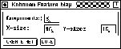
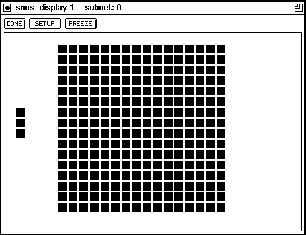

As described in chapter  , it is recommended to
create Kohonen-Self-Organizing Maps only by using either the
BigNet network creation tool or convert2snns outside the
graphical user interface. The SOM architecture consists of the
component layer (input layer) and a two-dimensional map, called
competitive layer. Since component layer and competitive layer are
fully connected, each unit of the competitive layer represents a
vector with the same dimension as the component layer.
, it is recommended to
create Kohonen-Self-Organizing Maps only by using either the
BigNet network creation tool or convert2snns outside the
graphical user interface. The SOM architecture consists of the
component layer (input layer) and a two-dimensional map, called
competitive layer. Since component layer and competitive layer are
fully connected, each unit of the competitive layer represents a
vector with the same dimension as the component layer.

To create a SOM, only 3 parameters have to be specified:
 Y-size.
Y-size.
If the parameters are correct (positive integers), pressing the
button will create the specified network. If the
creation of the network was successful a confirming message is
issued. The parameters of the above example would create the network
of figure  . Eventually close the BigNet panel by pressing
the
. Eventually close the BigNet panel by pressing
the  button.
button.
